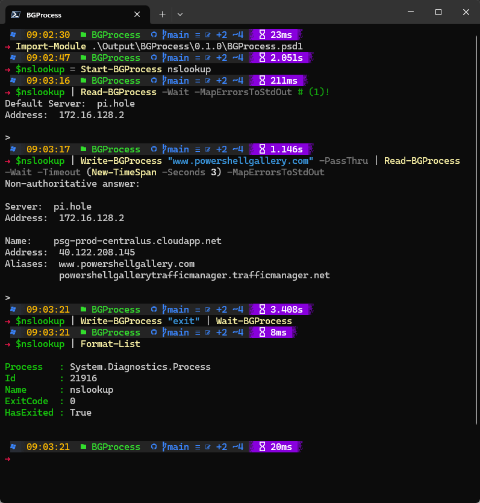

Welcome


Introduction
It can be complicated to read from the StandardOutput or StandardError streams
on a [System.Diagnostics.Process] object - especially without the risk of
blocking the terminal indefinitely.
This module is intended to simplify reading the output of a running process,
and reacting to it by writing to the StandardInput stream. Imagine for example
that you are required to use a command-line utility which cannot be executed
with simple command-line arguments. Instead, the utility prompts you to fill in
one or more pieces of information. Reading from StandardOutput synchronously
can result in locking up your PowerShell session if you call a Read method
and there is no data to be read from the stream yet.
When you use the Start-BGProcess cmdlet, the process is started and both
StandardOutput and StandardError streams are monitored asynchronously. When you
use Read-BGProcess, any data available from these streams will be returned
without blocking. Combine this with Write-BGProcess and you can easily
automate a stubborn command-line tool that is not automation-ready.
Installation
The module can be installed from PowerShell Gallery
by running the command Install-Module -Name BGProcess.
To install manually, you can download latest BGProcess.zip file from the
Releases section, and extract
it to one of your PSModulePath's.
Type $env:PSModulePath -split ';' in a PowerShell terminal to see where
PowerShell looks for modules on your system.
When extracted to a standard module path, the full path to BGProcess.psd1
should be similar to...
- Current user: C:\Users\
\Documents\WindowsPowerShell\Modules\BGProcess\0.1.0\BGProcess.psd1 - All users: C:\Program Files\WindowsPowerShell\Modules\BGProcess\0.1.0\BGProcess.psd1
Usage
I can't think of a good reason to use nslookup.exe this way, but it is used
as an example because it is readily available on any Windows system and if you
launch it without arguments it will present you with a prompt.
Here's a simple use case - see the screenshot below to see what it looks like
in the terminal. In a more complex scenario you would inspect the response from
Read-BGProcess and either wait for some particular string, or branch out and
perform different actions depending on the content.
1 2 3 4 5 | |
- Launches a windowless nslookup
[System.Diagnostics.Process]and encapsulates it in a [BGProcess] class which takes care of monitoring stdout/stderr for you. - Reads any data available on stdout and stderr. The
-MapErrorsToStdOutswitch is used here because nslookup writes "Non-authoritative answer:" to stderr and I'd rather see that as part of stdout. Also, since processes don't always write output all at once, there's a default timeout of 1 second beforeRead-BGProcessassumes there is no more data to be read. - Writes a DNS name to the StandardInput stream, and then waits until the process output has been idle for 3 seconds before returning control.
- Writes "exit" to StandardInput, and waits until the
nslookup.exeprocess exits. - Writes the
$nslookup[BGProcess]object to the terminal.

Known issues
- When an application writes to both StandardOutput and StandardError, there is
no preservation of order for the output. The StandardError stream is written
out from
Read-BGProcessbefore the StandardOutput stream, so even if the text in the StandardError stream was written at the very end, it will be output first. This might be mitigated by switching from reading from the StandardOutput and StandardError BaseStreams to subscribing to the OutputDataReceived and ErrorDataReceived events. In theory, these events should be fired in order, and then it should be easy to maintain the output order. It may also reduce complexity by eliminating the need for runspaces. - On linux, it does not appear that the Exited
event handler gets called, so the
ExitCodeandHasExitedproperties do not seem to be updated automatically. Something to look into.